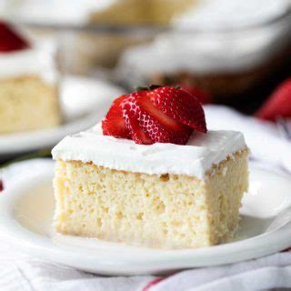

Tres Leches

Description
Tres leches cake is a cake soaked in a sweet milk syrup and topped with whipped cream.
If you want to get really fancy, spoon some diced strawberries and syrup over the cake.
It's really moist, delicious, and simple.
Ingredients
- 1 tablespoon vegetable shortening, or as needed
- 1 (15.25 ounce) package yellow cake mix
- 3 eggs
- 1 cup cold water
- 1/4 cup vegetable oil
- 1 teaspoon vanilla extract
- 1 (12 fluid ounce) can evaporated milk
- 1 (14 ounce) can sweetened condensed milk
- 1 cup half-and-half
- 1 cup heavy whipping cream
- 1 tablespoon white sugar, or to taste
- 1/2 teaspoon vanilla extract
Steps
- Preheat oven to 350 degrees F (175 degrees C). Generously grease a 10x15 inch baking pan with vegetable shortening.
- Combine yellow cake mix, eggs, water, vegetable oil, and 1 teaspoon vanilla extract in a large mixing bowl.
Beat with electric mixer until very smooth, scraping down the sides of the bowl as needed.
Scrape batter into the prepared baking pan. Smooth the top of the batter, shake pan, and tap lightly on counter
2 or 3 times to eliminate air bubbles.
- Bake in the preheated oven until a toothpick inserted in the middle of the cake comes out clean, about 22 minutes.
Let cake cool in the pan at least 30 minutes. Poke holes all over the cake with a bamboo skewer or the handle of a wooden spoon.
- Combine evaporated milk, sweetened condensed milk, and half-and-half in a large bowl;
slowly pour milk syrup all over the cake. Syrup will soak into cake.
Wrap cake with plastic wrap and refrigerate at least 3 hours (or preferably overnight).
- Whip cream with sugar and 1/2 teaspoon vanilla in a large bowl with an electric mixer until cream is fluffy;
spoon whipped cream over cake.